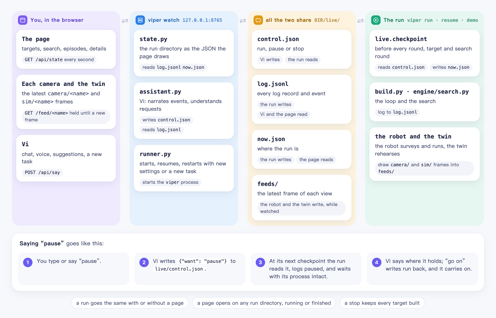
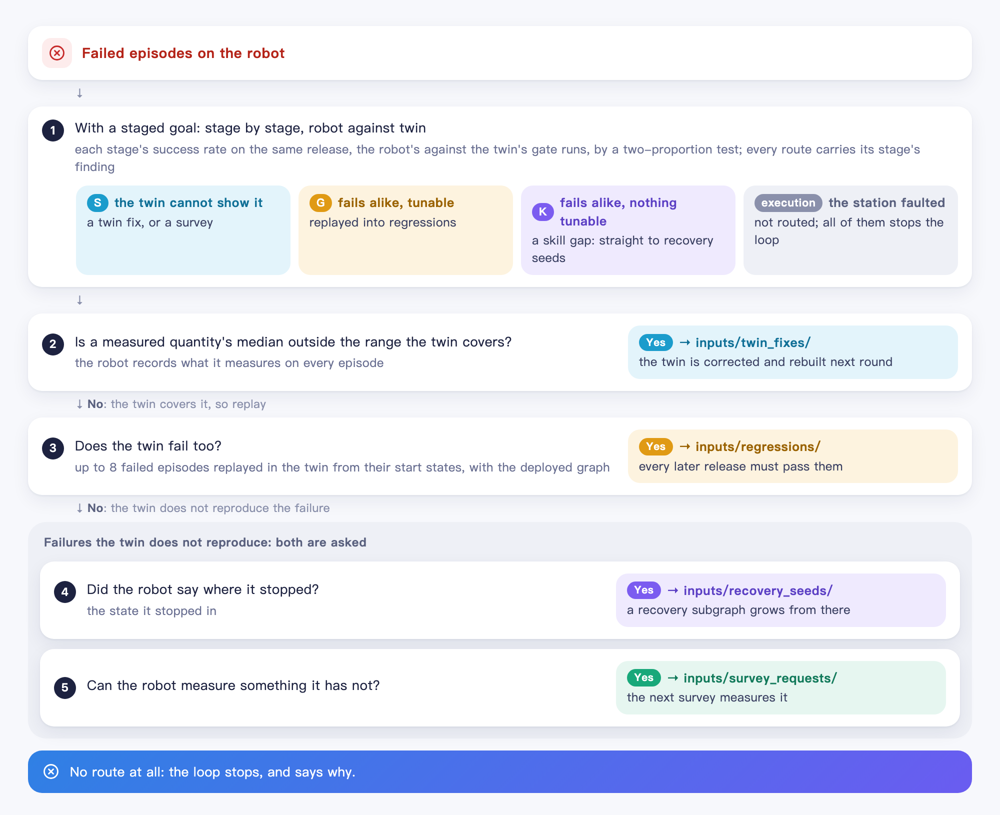

Using VIPER
VIPER is make for robot policies. A brief says what the task is, which simulator to search in and which robot to run on. VIPER builds six targets in order, each behind a gate. When the robot fails, the diagnosis sends each failure back to the stage that can fix it, rebuilds only what that made stale, and tries again. What it builds is a Graph-as-Policy (GaP) graph, the same one in simulation and on the robot.
- 1. The loop
- 2. Install
- 3. The offline demo
- 4. Everyday commands
- 5. Watching a run, and talking to Vi
- 6. Writing a brief
- 7. RoboSimStudio on a GPU host
- 8. Borrowing a skill from the hub
- 9. What a run directory holds
- 10. After the robot fails: the four routes
- 11. The benchmark suite
- 12. Extending VIPER
- 13. Troubleshooting
1. The loop

| Target | What it does | Gate |
|---|---|---|
survey |
The robot measures its bench before the twin is built, and more when asked | Everything asked for was measured |
twin |
Builds a family of randomised scenes from the brief, the survey and every fix | The station's twin check |
task |
Writes the goal from the objects the twin has | The goal names only objects the twin has |
release |
Searches the twin for a graph | Wilson 95% lower bound of success on holdout instances ≥ 0.8 |
recoveries |
Grows recovery subgraphs from the states the release gets stuck in, spliced onto its failure exits | The whole graph passes the release gate again and loses nothing the release passed |
real |
Runs the deployed graph on the robot | Success rate ≥ 0.8 |
A target's build key digests its version and the content of everything it
needs: the same key skips the build, a new one rebuilds it and everything
downstream. The diagnosis does one thing, append an entry under inputs/,
which makes the targets that need that input stale; the next round rebuilds
just those.
2. Install
VIPER needs Python 3.11 or 3.12 and uv. It runs on the standard library alone; each simulator runs in its own Python, which VIPER never imports.
git clone https://github.com/runtime-si/VIPER_Temp.git
cd VIPER_Temp
git checkout feat/stations # until PR #2 merges
uv venv --python 3.11 && source .venv/bin/activate
uv pip install -e ".[test]"
viper stations
viper stations lists the installed stations:
bullet real+sim PyBullet on the CPU: a Panda picks a cube by camera and places it on a pad
fake real+sim A toy cube-to-plate world in plain Python, for tests and the demo
rss real+sim RoboSimStudio on Newton: a Panda picks a cube by camera and places it on a pad
sapien real+sim SAPIEN on PhysX 5: a Panda picks a cube by camera and places it on a pad
| Station | Engine | What else it needs |
|---|---|---|
fake |
plain Python | nothing; the demo and the tests |
rss |
RoboSimStudio on Newton (MuJoCo-Warp) | a GPU and a RoboSimStudio checkout with GaP |
bullet |
PyBullet on the CPU | pybullet, numpy and GaP |
sapien |
SAPIEN 3 on PhysX 5 | sapien, pybullet_data, numpy, GaP and a GPU with Vulkan |
The last three stage one task, a Panda that finds a cube by camera and puts it on a pad, with the same tool names, so one graph runs on any of them and a brief may search in one and run on another. Every robot is a stand-in for now: the same simulator built from the true scene.
To run the tests:
uv run pytest -q tests
3. The offline demo
The fake station is a toy world in plain Python with a scripted author. The
whole loop takes under a second:
viper demo --out runs/demo
The log, abridged:
INFO round 1 of 3
INFO building survey
INFO twin passed its gate tcp_bias_mm=0
INFO building release
INFO round 0: best is n0000 (seed), 68/100 on the gate
INFO round 1: best is n0003 (recovery), 94/100 on the gate
INFO release passed its gate lower_bound=0.8752 n=100 rate=0.94 successes=94
INFO building real
WARNING real: real success 0.65 is below 0.8
INFO routed to twin_fixes: tcp_bias_mm measured 6.509, twin covers [-2.5, 2.5]
INFO round 2 of 3
INFO survey is up to date
INFO building twin
INFO twin passed its gate tcp_bias_mm=6.509
INFO task is up to date
INFO building release
INFO n0005 from topology is invalid: calls sim.get_object_pose, which not every station provides
INFO release passed its gate lower_bound=0.8137 n=100 rate=0.89 successes=89
INFO real passed its gate successes=20 n=20 rate=1
In order:
- First round. The twin assumes the tool point lands where it is sent. The policy it finds does 94/100 there and 65% on the robot.
- Diagnosis. The robot read the tool point's offset on every episode, a median of 6.509 mm, outside the twin's [-2.5, 2.5], so the twin gets a fix.
- Second round.
surveyandtaskdo not need the fix and are kept;twinis rebuilt at 6.509 mm andreleasesearches again. - The safety check. During the search the author proposes an edit that
calls
sim.get_object_pose, the simulator's ground truth. It is rejected before it runs, because the robot has no such tool. - The robot again. 20/20.
Then:
viper status runs/demo # every target's build and gate
viper show runs/demo # writes runs/demo/report/index.html
open runs/demo/report/index.html
4. Everyday commands
| Command | What it does |
|---|---|
viper run BRIEF --out DIR |
Builds a brief's targets, closing the loop when the robot fails |
viper run BRIEF --out DIR --until release |
Builds up to one target; the loop closes only at real |
viper resume DIR |
Builds again from the brief the run directory holds, skipping what is built |
viper resume DIR --brief NEW.toml |
Builds again from another brief, rebuilding only what it changed |
viper resume DIR --instruction "TASK" |
Builds again for another task, in words; the survey is kept (section 5) |
viper run BRIEF --out DIR --watch |
The same under a live page with Vi (section 5); demo and resume take it too |
viper watch DIR |
The live page over a run directory, running or not |
viper status DIR |
Every target's current build and gate, and the inputs |
viper show DIR |
Writes every build, gate, route, search tree and film to DIR/report/index.html |
viper export DIR --to PKG |
Writes the deployed policy and the whole history as a viper.package/1 |
viper import PKG --out DIR |
Loads a package into a run directory; viper resume DIR continues it |
viper import PKG --out DIR --brief OTHER.toml |
Another scene: carries over the policy alone, as a seed of the new run's search |
viper stations |
Lists the installed stations |
viper hub search --index HUB --station NAME |
Lists the hub skills a station can run; --all adds the rest and why not |
viper hub lock GRAPH --index HUB |
Writes a graph's skills.lock |
viper hub publish DIR --to HUB/skills |
Writes a run's recoveries as hub skill bundles |
run and resume take --rounds N, the most rounds of the loop, 3 by
default; run, resume and demo take --instruction, the task in place of
the brief's. -v before any command logs debug messages.
Common patterns:
# Search in simulation up to the release, and look before going to the robot
viper run brief.toml --out runs/x --until release
viper show runs/x
viper resume runs/x # then close the loop
# Continue after an interruption
viper resume runs/x
# Change a setting in the brief and rebuild only what it touches
viper resume runs/x --brief brief.toml
# Give the run another task; the robot does not survey again
viper resume runs/x --instruction "put the cube in the bowl"
# Take this run's policy to another scene
viper export runs/x --to pkgs/x
viper import pkgs/x --out runs/y --brief other.toml
viper resume runs/y
After every round the robot failed, and when it ends, a run saves itself as a
package under DIR/versions/v0001, v0002, and so on; viper import loads
any of them.
5. Watching a run, and talking to Vi
--watch runs a command under a live page on http://127.0.0.1:8765/:
viper demo --out runs/demo --watch # the demo, paced to take about a minute
viper run brief.toml --out runs/x --watch # a run, with the page beside it
viper resume runs/x --watch # the same, going on from where it stopped
viper watch runs/x # the page over any run directory, running or not
viper watch runs/x --feed camera=http://robot:8080/stream.mjpg # with the robot's camera

The page shows, as they happen:
- the simulation: the twin rehearsing, one tile per instance of the batch in progress, each marked success or failure;
- the robot's camera: what the station draws, a camera's MJPEG stream
(
--feed camera=URL, or Add a stream URL on the page), or this computer's webcam; - where the run is: the six targets, built, building, stale or failed, with their gate readings, the checkpoint the run is at, and the inputs the diagnosis has written;
- the success rate: one tile per episode, green or red, from the build in progress or the robot's last run;
- the search: the gate rate of the best graph each round with its Wilson bound, each edit tried and whether it passed screening;
- the details, one tab each: the graph being deployed with the failures counted at each node, where each cube started and ended on the bench, the films the simulator recorded, the routes the diagnosis took, and the log.
Beside it is Vi, who says what the run is doing as it does it (a round starts, a target is built, the search finds a better graph, an edit is rejected, the robot fails and why, the route the diagnosis takes) and takes requests, typed or spoken (the browser's speech, where it has one):
| Say | What happens |
|---|---|
| "how is it going" | Where the run is and the latest gate readings |
| "pause" | The run holds at its next checkpoint, keeping its process |
| "go on" | A held run goes on; a stopped one resumes |
| "stop" | The run stops at its next checkpoint, with what it built kept |
| "stop now" | The process is killed; the build in progress is lost |
| "only up to release" | Resumes with --until release |
| "10 real episodes", "8 search rounds", "real_episodes = 5" | Restarts from a brief with the setting changed; only what it touches is rebuilt |
| "task: put the cube in the bowl", or click the task at the top | Restarts with --instruction: the survey is kept, the task and what it changes are rebuilt |
| "why did it fail" | The diagnosis of every failed round |
| "what are regressions" | What a VIPER word means |
Changing the task. Click the task at the top of the page, or its pencil,
type the new one and press Run this task; or tell Vi "task: ...". The run
stops at its next checkpoint and resumes with the new instruction, as
viper resume DIR --instruction "..." does from a terminal. The survey never
reads the instruction, so the robot does not measure again. The task is
written again, the release and its recoveries are searched again for it,
and the robot runs again only if they deploy a different graph. A task the
station cannot do stops at the gate that says why: on the fake station,
"put the cube in the bowl" fails the task's gate (the goal names objects
the twin lacks: ['bowl']), and "put the plate on the cube" fails the
release's referee self-test.
Where the page meets the run
The page and the run share nothing but files under DIR/live/, so a run
goes the same with or without a page, and a page can open on any run
directory, running or finished:

A checkpoint is a call to live.checkpoint at three places in the run:
before every round of the loop and before every target (viper/build.py),
and before every round of the search (viper/engine/search.py). It is where
anything you ask takes effect. Saying "pause" goes like this:
- Vi writes
{"want": "pause"}tolive/control.json; the page marks the checkpoint ahead as asked. - At its next checkpoint the run reads the file, logs
paused at round 2, target release, writespausedtolive/now.json, and waits, reading the file twice a second. Nothing is lost: the process, its search and its models stay as they are. - The page marks the checkpoint as held and Vi says where the run is holding. You can look at anything on the page meanwhile.
- "go on" writes
{"want": "run"}and the run carries on from the same line. "stop" writes{"want": "stop"}: the run raisesHalted, keeps every target it built, and exits with status 3; "go on" then resumes it withviper resume. A request that changes settings ("10 real episodes") or the task stops the run the same way and restarts it with the change, so only what the change touches is rebuilt.
A paused or stopped run says where in live/now.json. The run is a child of
the page in its own session and writes its log to DIR/live/run.log; Ctrl-C
on the page asks it to stop at the next checkpoint. Until a run is attached to
its directory (the command line attaches it) a checkpoint does nothing, so
code that calls the stages directly never waits.
The live views
A station draws a view with live.frame("sim", data, ".svg", **meta): the
latest picture goes to live/feeds/sim.frame, what it shows to
live/feeds/sim.json. Drawing costs time, so a station draws only while
live.watched() says a page has read the run in the last ten seconds; a run
nobody watches draws nothing. The page asks for /feed/sim?after=<time>, and
the server holds the request until a newer frame arrives, so frames show as
soon as they are written without the page polling for pictures.
The fake station draws both views. The bullet, SAPIEN and RoboSimStudio
stations draw their renders in their workers, which run as jobs on this
machine or over ssh; the frames a worker draws are copied back into the run's
live/feeds/ as they appear. The camera view takes, in the order the page prefers them: the
station's frames, a stream URL, or this computer's webcam; when it has more
than one, a switch above the view picks.
The page listens on 127.0.0.1 alone; to watch a GPU host, forward the port
(ssh -L 8765:127.0.0.1:8765 gpu) and open it locally.
Vi speaks English by default; --lang zh or VIPER_LANG=zh starts her in
Chinese, and the language button at the top of the page switches either way
at any time. To have a language model answer instead of the rules, name one
behind an OpenAI-compatible endpoint; Vi hands it the run's state and carries
out the actions it returns, and goes back to the rules when it fails:
export VIPER_CHAT_MODEL=gpt-4o-mini
export VIPER_CHAT_URL=https://api.openai.com/v1 # the default
export VIPER_CHAT_KEY=... # or OPENAI_API_KEY
6. Writing a brief
A brief is a TOML file; stations/<station>/brief.example.toml are examples.
instruction = "put the cube on the pad" # required: the task
sim = "rss" # required: the station to search in
real = "rss" # required: the station to run on
models = "stations.cube_on_pad:LibraryAuthor" # the author: "fake" or "module:Class"
# goal = "(once ...)" # optional: the goal, else a template's
[twin.cube] # the estimate of the scene, which the diagnosis corrects
size_mm = 50.0
[settings]
seeds = 4
n_train = 48
n_holdout = 100
search_rounds = 12
real_episodes = 20
[sim_options] # where the simulator runs
python = "/root/viper-work/robosimstudio/.venv/bin/python"
workdir = "/root/viper-work/robosimstudio"
host = "gpu"
ssh_config = "~/.ssh/config"
remote_root = "/root/viper-work/jobs"
shards = 4
worlds = 25
[real_options]
python = "/root/viper-work/robosimstudio/.venv/bin/python"
workdir = "/root/viper-work/robosimstudio"
host = "gpu"
ssh_config = "~/.ssh/config"
remote_root = "/root/viper-work/jobs"
shards = 10
[real_options.truth.cube] # the true scene on the stand-in robot
size_mm = 26.0
[settings], each with its default:
| Key | Default | Meaning |
|---|---|---|
seeds |
3 | Seeds the author writes |
n_train / n_holdout |
96 / 100 | Train and holdout instances |
search_rounds / width / batch |
16 / 4 / 24 | Most search rounds, candidates per round, train instances per round |
release_tau / release_min_n |
0.8 / 100 | The release gate: least Wilson lower bound, fewest gate runs |
recovery_least |
3 | Fewest stuck states at one node worth a recovery; one from the robot is always enough |
recovery_rounds / recovery_tau |
8 / 0.5 | Recovery search rounds, and the bound a kept recovery must reach |
recovery_variants |
3 | Varied copies of each stuck state, for train and for holdout |
recovery_probes |
48 | Disturbed runs of the release, 0 for none |
real_episodes / real_tau |
20 / 0.8 | Episodes on the robot, and the rate that passes |
seed |
0 | The search's random seed |
[sim_options] and [real_options]:
| Key | Meaning |
|---|---|
python, workdir |
The simulator's interpreter and working directory, on the machine that runs jobs |
host, ssh_config |
The SSH host that runs jobs; none runs them here |
hosts, gpus |
A pool of hosts that split a job's shards; GPUs shards take in turn |
shards |
Worker processes a job is split across |
worlds |
rss simulator only: worlds each process steps as one batch |
remote_root, keep_remote, timeout_s |
Where job directories go on the host, whether to keep them, the longest a job may take |
env |
The workers' environment variables, taken literally, with no $VAR expansion |
skills |
Hub checkouts on the machine that runs jobs |
policies |
{name = {url = "..."}}, checkpoint servers (not wired yet; see section 8) |
truth |
Stand-in robot only: the true scene, over the default one |
surveys, film |
Robot only: what it may measure; episodes of each execution to film |
Other tables: [randomize] (variants, the scenes a twin draws from, 8 by
default; tcp_spread_mm, how far each moves the tool point, 1.5 by default),
[disturb] (what goes wrong in probe runs, by default a grasp that lets go in
half of them; an empty table disturbs nothing) and [hub] (section 8).
7. RoboSimStudio on a GPU host
The GPU host needs a RoboSimStudio checkout with its virtual environment
and GaP, such as /root/viper-work/robosimstudio. VIPER copies each job
directory there and runs worker.py in that environment.
This machine needs an SSH host called gpu in ~/.ssh/config, which a
brief's host = "gpu" names:
Host gpu
HostName <address>
Port <port>
User root
IdentityFile ~/.ssh/<your key>
ServerAliveInterval 30
ControlMaster auto
ControlPath /tmp/gpu_ssh_%C
ControlPersist 10m
Once ssh gpu true passes without a password:
viper run stations/rss/brief.example.toml --out runs/rss
The brief estimates a 50 mm cube; the stand-in robot's is 26 mm. The first release passes in the twin and fails on the robot, the robot's camera measures the cube, the twin is rebuilt, and the second release passes on the robot: 10 to 20 minutes on one RTX 4080 SUPER.
Run long runs inside tmux, so that closing the terminal does not stop them;
viper resume runs/rss continues one that stopped.
8. Borrowing a skill from the hub
RoboSkillHub is the catalog of
skills. stations/rss/brief.hub.toml lets the search borrow its
verifying-grasps: after the pick it lifts the cube a little, finds it with
SAM3 in a wrist camera, and checks that it rose with the hand. The overhead
camera is blocked by the hand by then, so the rss scene has a wrist camera.
What it needs:
- A hub checkout on this machine, whose
index.jsonVIPER reads: the brief'sindex = "../Runtime_Robo_Skill_Lab", beside VIPER. - A hub checkout on the GPU host, the brief's
skills = ["/root/autodl-tmp/hub"], from which the skill's scripts and tool bundles run. - SAM3's weights.
facebook/sam3is gated: a Hugging Face token with access downloads them into the host's Hugging Face cache, from which the workers load them offline. - The geometry bundle's environment, synced in the host checkout's
tools/geometry.
What can the station run?
viper hub search --index ../Runtime_Robo_Skill_Lab --station rss \
--embodiment panda --serves sam3 --serves geometry --stage verify
2 of 3 bundles fit station rss
verifying-grasps skill verify verified,not_held,reached,missed,held,empty,unknown
verifying-placement skill verify verified,not_placed
The hub's part of the brief:
[hub]
index = "../Runtime_Robo_Skill_Lab"
embodiment = "panda"
serves = ["sam3", "geometry"]
[sim_options]
skills = ["/root/autodl-tmp/hub"]
[sim_options.env]
PATH = "/root/.local/bin:/usr/local/sbin:/usr/local/bin:/usr/sbin:/usr/bin:/sbin:/bin"
UV_CACHE_DIR = "/root/autodl-tmp/uv-cache"
HF_HUB_CACHE = "/root/autodl-tmp/hf-hub"
HF_HUB_OFFLINE = "1"
UV_OFFLINE = "1"
UV_NO_SYNC = "1"
ROBOSIMSTUDIO_SEGMENTATION_BACKEND = "sam3"
[real_options] takes the same skills and env, since the deployed graph
runs the skill on the robot too.
viper run stations/rss/brief.hub.toml --out runs/rss-hub
It takes about 19 minutes on one RTX 4080 SUPER. The first release borrows the
verifier and fails on the robot's 26 mm cube; the twin is rebuilt from the
measured 26.5 mm; the second release is again the seed that borrows it, 20/20
on the robot with every pick verified.
targets/release/<key>/skills.lock pins verifying-grasps, sam3 and
geometry to their content digests.
About borrowing:
- A seed borrows a skill as a subgraph whose
skillnames it; the hub is never edited. - The checks before a candidate runs rule out a borrowed skill the station cannot run, such as one that needs a tool or a tool bundle it lacks.
- A checkpoint, such as π0.5 or a model fine-tuned elsewhere, is meant to be a
GaP node that talks to a policy server, named by
policies. The hub already judges which checkpoints have a server, andpoliciesreachesjob.json, but the rss worker does not pass it to GaP yet.
9. What a run directory holds
runs/<name>/
inputs/brief/ the brief
inputs/survey_requests/ what the diagnosis asked the robot to measure
inputs/twin_fixes/ corrections measured on the robot
inputs/regressions/ real failures the twin reproduces, which every later release must pass
inputs/recovery_seeds/ where real failures the twin does not reproduce got stuck
inputs/seeds/ more policies to search from, such as an imported package's
targets/<target>/<key>/ one directory per build, never changed once written
state.json the current build of each target
ledger.jsonl every input, build, gate and route, in order
versions/v0001/ ... the saved versions
report/index.html what viper show writes
live/ what the live page reads: log.jsonl, now.json (where the run is),
control.json (pause or stop), run.log, chat.jsonl (Vi's conversation)
The files you will look at most:
| File | What it holds |
|---|---|
targets/release/<key>/graph/ |
The policy: workflow.json (nodes, edges, subgraphs, routes), params.json (each tunable input's range and step), scripts/ |
targets/release/<key>/release.json |
Which candidate won, its lineage and its gate |
targets/release/<key>/search/tree.json |
The search tree: which edit wrote each candidate, and how it fared |
targets/release/<key>/skills.lock |
The hub bundles the policy runs, at their digests |
targets/recoveries/<key>/graph/ |
The deployed graph: the release with its recoveries |
targets/real/<key>/rollouts.json |
Every episode on the robot: success, the node blamed, the observations, start and end states |
10. After the robot fails: the four routes
A failure on the robot means the twin differs from the robot, or the policy
was never tried in that situation, or both. Each cause is fixed in a different
stage, and starting over is slow and learns nothing. The diagnosis
(viper/stages/diagnose.py) asks a few questions in turn and sends each
failure where it can be fixed.

twin_fixes: the twin has a number wrong
When. The robot records what it measures on every episode
(observations): the cube's size as its camera reads it, the depth noise, the
tool point's offset. The twin randomises each quantity over a range
(twin/<key>/support.json). When the median reading lies outside that range,
the twin is wrong.
What is written. The median, and how far the readings spread (doubt).
The demo's:
{"measured": {"tcp_bias_mm": 6.509}, "doubt": {"tcp_bias_mm": 1.1456}, "real": "ef77440484e935d6"}
What is rebuilt. twin, from the measurement, now randomised around it
(a cube's size over the measurement ± max(3 × doubt, 1 mm)). release searches
again, with the previous release among its seeds. A quantity that is not in
twin/facts.json, a cube's size or the depth noise, leaves task alone; a
tool-point offset is a fact, so task is rebuilt, to the same goal.
Why it comes alone. Replaying failures in a twin that is wrong tells nothing, so a diagnosis that finds a fix returns only the fix and leaves the rest to the next round.
Examples. In the demo, the twin covers [-2.5, 2.5] and the robot measures
6.509 mm. In the size_blind benchmark, the twin covers [45, 55] and the robot
measures a 25.99 mm cube; after the fix, the second release does 20/20.
regressions: the twin is right, the policy was not tried there
When. With the twin's numbers right, each failed episode's start state, such as where the cube was and which way it faced, is replayed in the twin with the deployed graph. When the twin fails too, the twin already holds the situation; the search's train and holdout instances just missed it, or met it too rarely.
What is written. The start state and where it failed, such as
{"instance": "real/7", "state": {...}, "blame": "pick_sg/locate"}.
What is rebuilt. Each entry becomes a fixed instance, regression/<k>,
that joins every train batch and every gate of every later search, so no later
release can pass without it and the policy cannot forget it. release,
recoveries and real are rebuilt. A state is routed once.
Example. None of the benchmarks has needed one yet: the train and holdout instances cover the spawn region well. A typical case, for illustration: a cube in a far corner of the spawn region, rarely drawn among 100 holdout instances, fails on the robot and fails again in the twin's replay, and so becomes a regression instance.
recovery_seeds: the twin does not fail, but the robot said where it stopped
When. The twin's replay succeeds where the robot failed: the robot differs
from the twin in something the twin does not model, such as a grasp that slips,
other friction, or a tool point that lands off. When the robot reported the
state it gave up in (end_state: the arm's joints, the cube's pose, the
gripper), that state is where a recovery starts.
What is written. That state and where it failed. One from the
slip_reactive benchmark, where the cube slipped in transport and fell beside
the pad, so placing failed its check:
{"blame": "place_sg/verify", "instance": "real/1",
"state": {"arm": [...], "cube": [0.02579, -0.09174, 0.01299, 1.55334], "fingers": 0.04, "grip": 0.04}}
What is rebuilt. recoveries and real only; the release is kept.
recoveries searches from those states, and from varied copies of them, for a
chain that picks the cube up again and places it, and splices it onto the
failure exit of placing. An episode that does not fail there runs the release
unchanged.
Example. In slip_reactive the twin makes nothing slip, so only the robot
finds the slips: 12/20 on the first run, 8 stuck states become where recoveries
start, and 20/20 on the second.
survey_requests: the twin does not fail, so measure what has not been
When. Again a failure the twin does not reproduce. Some quantities are
measured only by moving the arm, such as the tool point's offset, read by
reaching to a few points and seeing by camera where the hand arrived, so the
survey measures them only when asked. When the robot can measure such a
quantity and has not, the diagnosis asks.
What is written. The quantities, such as
{"quantities": ["tcp_bias_mm"], "real": "..."}.
What is rebuilt. survey, where the robot measures; then twin from what
it found; then task, release and the rest.
Examples. In the bias benchmark the tool point lands 35 mm off in y, which
the camera does not see. The first run does 0/20, and the twin reproduces none
of 8 failures, so the diagnosis asks for tcp_bias_mm. Three reaches measure
33.2 mm, the twin is rebuilt with that offset, the author aims every planning
node 33.2 mm the other way, and the second run does 20/20. The same failures
were also routed as recovery seeds that round. In slip_reactive the same
request measured 0, which ruled the offset out, and the recoveries fixed the
rest.
When the loop stops
The loop stops, recording why in a stopped entry of ledger.jsonl (which
viper show also shows; viper status shows the last gate that failed), when:
- the twin reproduces none of the failures, none reported where it stopped, and the robot has nothing left to measure: the robot differs from the twin in something nothing measures; or
- every failure has been routed before, and the round has nothing new.
Example. bias_blind lands 35 mm off like bias, on a robot that cannot
reach to measure. Recoveries from where it got stuck pick again with the same
offset and miss again, and after three rounds the loop stops with
real success 0.00 is below 0.8; the diagnosis has nothing new to route.
In short
| Route | When | Rebuilds | Benchmarks that take it |
|---|---|---|---|
twin_fixes |
A measurement lies outside the twin's range | the twin and what follows | size_blind, noise_blind, the demo |
regressions |
The twin's replay fails too | release, recoveries, real | none yet |
recovery_seeds |
The twin's replay succeeds, and the robot said where it stopped | recoveries, real | slip_reactive, bias |
survey_requests |
The twin's replay succeeds, and the robot can measure more | the survey and what follows | bias, slip_reactive |
11. The benchmark suite
benchmarks/suite.toml holds one brief per gap between the twin and the
robot, each beside a twin of it with one capability turned off.
cp benchmarks/host.example.toml benchmarks/host.toml # name your host
python benchmarks/run.py --out runs/bench --host benchmarks/host.toml
cat runs/bench/results.md
The eight scenarios run one after another in about 50 minutes; the latest results are in the README.
12. Extending VIPER
A language-model author. A class with the two protocols of
viper/models.py, named in the brief as
models = "my_pkg.authors:LlmAuthor":
class LlmAuthor:
edit_kinds = ("script", "recovery", "topology") # the structural edits it writes
def write_task(self, brief, facts):
"""Return {"instruction", "goal", "objects"}, the goal in the task language."""
def seed(self, task, facts, out, index):
"""Write the index-th seed graph into the empty directory out. facts has
objects and support, and skills with a hub."""
def edit(self, graph, *, kind, failures):
"""Edit graph, a copy of the parent, in place; False when there is no edit."""
A new simulator or robot. A package stations/<name>/ with:
station.toml:name,description,provides = ["sim", "real"],tools, the tools both sides provide, and[sim] tools, the simulator's own ground truth.__init__.pywithmake_sim(spec, options)andmake_real(spec, options).- The simulator implements
build_twin,check_twin,check_goalandrehearse, and may addfilm,starts_from_statesandvary. - The robot implements
execute, and may addsurveyandsurveys.
The protocols are in viper/station.py. stations/bullet/ is the shortest to
start from: it runs a worker through job directories, so only job.json and
results-*.jsonl cross between VIPER and the simulator.
13. Troubleshooting
ssh: Could not resolve hostname gpu. ~/.ssh/config has no Host gpu.
Add the block in section 7, or point the brief's ssh_config at a file that
has one.
The geometry bundle fails with uv: command not found. A non-interactive
SSH login has a short PATH. Spell PATH out in [sim_options.env], with the
directory uv is in; env is taken literally and does not expand $PATH.
uv sync hangs while syncing the geometry environment. It is cloning
GaP's submodules, several GB of them. Export the pinned requirements in the
hub checkout with
uv export --frozen --no-hashes --no-emit-package graph-as-policy-core,
install them into tools/geometry/.venv, then install a local gap-core.
SAM3 reaches for the network, or quietly falls back to colour matching.
Set HF_HUB_CACHE to the cache that holds the weights, HF_HUB_OFFLINE=1,
and ROBOSIMSTUDIO_SEGMENTATION_BACKEND=sam3, so that a failure fails loudly.
The verifier always routes not_held. The hand blocks the overhead camera.
The verifier looks through the eye_in_hand wrist camera first, which the rss
scene has; keep it in a scene of your own.
A run stops when the terminal closes. Run it in tmux, or continue it with
viper resume DIR.
rss runs have no films. The rss worker does not film yet; bullet and
sapien do.
Changing one setting rebuilt the whole release. A release's version digests the simulator, the author, the search settings and the hub, so a change to any of them rebuilds it; the twin and the task are kept.